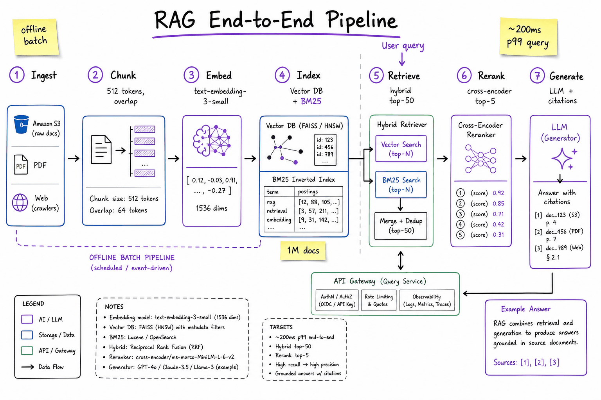
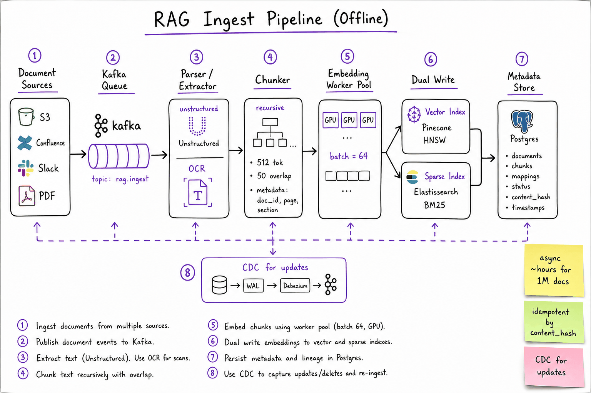
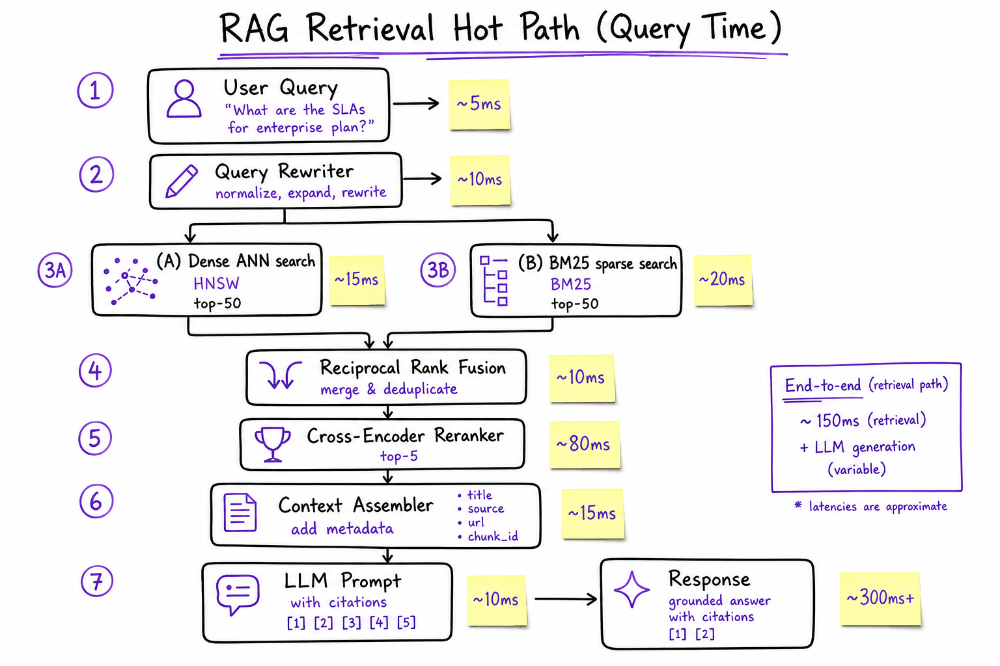
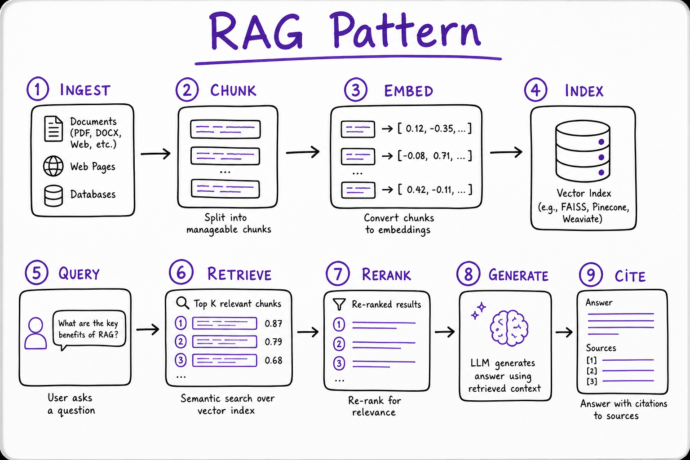

The RAG pipeline // Knowledge & RAG
Retrieve, augment, generate: every stage from a question to a grounded, cited answer.
01 — At a glance
Production retrieval-augmented generation: offline ingest → chunk → embed → dual index (dense + sparse) → hybrid retrieve → cross-encoder rerank → grounded LLM generation with citations. The canonical AI system design interview.

Full RAG pipeline: offline ingest path (sources → parse → chunk → embed → dual index) and online query path (rewrite → hybrid retrieve → rerank → assemble context → generate with citations). Two pipelines, one metadata spine.

Ingest zoom: async Kafka pipeline from heterogeneous sources through parse/chunk/embed to dual-write vector + sparse indexes. Idempotent on content_hash; CDC triggers re-chunk on update.

Retrieval zoom: query rewrite, parallel dense ANN + BM25, RRF merge, cross-encoder rerank, context assembly, and citation-aware generation. Latency annotations on each hop.

The RAG pattern in nine steps: ingest, chunk, embed and index offline; query, retrieve, rerank, generate and cite online.
02 — What & Why
Problem
LLMs hallucinate on private, time-varying, or domain-specific knowledge. RAG grounds generation by retrieving relevant passages at query time instead of stuffing everything into pre-training or context.
Functional Requirements
- Ingest documents from S3, Confluence, Slack, PDFs, web crawls
- Answer user questions with accurate, up-to-date information
- Return inline citations linking to source chunks (doc_id, page, URL)
- Support document refresh / deletion (CDC, re-index)
- Multi-tenant isolation (org_id scoping on every query)
Non-Functional Requirements
- Latency: <500ms p99 end-to-end (retrieve + rerank + generate first token)
- Throughput: 10K QPS query serving at peak
- Freshness: new docs searchable within minutes (near-line ingest)
- Recall: relevant chunk in top-5 after rerank >95% on golden set
- Faithfulness: answer supported by retrieved context, not invented
- Cost: embedding + LLM token budget per query bounded
03 — Core Concepts
| Term | Definition | Gotcha |
|---|---|---|
| Chunk | Atomic retrieval unit (~256–1024 tokens) with metadata (doc_id, page, section). | Too small = lost context; too large = noisy retrieval + wasted context window. |
| Embedding | Dense vector representation of text for semantic similarity search. | Query and doc must use the same model + version. Re-embed on model upgrade. |
| Vector Index | ANN structure (HNSW, IVF) for sub-linear nearest-neighbor search. | Recall@k drops at scale; tune ef_search / nprobe. Not exact search. |
| Sparse Index | BM25 / inverted index for lexical keyword matching. | Misses paraphrases; essential for SKUs, acronyms, exact phrases. |
| Hybrid Retrieval | Combine dense + sparse scores (RRF, weighted sum). | Either alone fails on ~30% of enterprise queries. |
| Reranker | Cross-encoder scoring query–passage pairs for precision. | 10× slower than bi-encoder; only run on top-50 candidates. |
| Context Window | LLM input limit (4K–128K tokens). | Stuffing 20 chunks degrades quality; rerank to top-3–5. |
| Grounding | Constraining the LLM to answer only from retrieved passages. | Prompt alone is insufficient; need eval + refusal on low confidence. |
| Metadata Filter | Pre-filter index by tenant, date, ACL before ANN search. | Post-filter after ANN wastes compute and misses results. |
| Semantic Cache | Cache (query_embedding → response) for near-duplicate questions. | Threshold too low = stale wrong answers; too high = no hits. |
04 — API Surface
Ingest (async)
POST /v1/documents
body: { source_url | s3_uri, org_id, metadata: { title, acl, tags } }
-> 202 { job_id, status: "QUEUED" }
GET /v1/documents/{doc_id}
-> { status, chunk_count, indexed_at, content_hash }
DELETE /v1/documents/{doc_id}
-> 204 (tombstone + async index purge)
POST /v1/documents/batch
body: { documents: [...] }
-> 202 { batch_id }
Query (sync)
POST /v1/query
body: {
question: "What is our refund policy for enterprise?",
org_id: "org_abc",
filters: { tags: ["policy"], date_after: "2024-01-01" },
top_k: 5,
include_citations: true,
stream: false
}
-> 200 {
answer: "...",
citations: [
{ chunk_id, doc_id, title, url, snippet, score, page }
],
retrieval_ms: 95,
generation_ms: 820
}
POST /v1/query/stream
-> SSE: token deltas + final citations event
Internal (service-to-service)
retrieval.hybridSearch(query, filters, top_k=50) -> [chunk_id, score] rerank.scorePairs(query, chunks[]) -> [chunk_id, rerank_score] embed.encode(texts[]) -> float[][] index.upsert(chunks[]) -> ok index.delete(doc_id) -> count_deleted
The query API is what interviewers whiteboard. Ingest is async job-queue territory — never block the user on embedding 1M docs.
05 — When to Use / When NOT
| Approach | Use When | Skip When |
|---|---|---|
| RAG | Knowledge changes frequently; need citations; corpus > context window; multi-tenant docs. | Corpus fits in 128K once; style/format matters more than facts. |
| Fine-tune | Consistent tone, tool-use format, domain vocabulary; small static knowledge. | Knowledge updates weekly; can't afford retrain cycle. |
| Long context | Single doc Q&A; legal review of one contract; no retrieval infra. | 100K+ docs; cost/latency prohibitive at 10K QPS. |
| GraphRAG | Multi-hop reasoning over entities (org charts, supply chain). | Simple FAQ lookup; graph build cost unjustified. |
| Web search API | Public internet freshness (news, docs). | Private enterprise data behind firewall. |
Production sweet spot: RAG + small fine-tune (or prompt tuning) for format + hybrid retrieval + reranker. Most teams at scale combine all three layers.
06 — Architecture
OFFLINE (batch / near-line)
Sources ──> Kafka ──> Parser ──> Chunker ──> Embed Workers ──> Dual Index
S3/PDF queue OCR/extract 512 tok GPU pool ├─ Vector (HNSW)
Confluence └─ Sparse (ES BM25)
│
Metadata DB (Postgres)
ONLINE (query path, <500ms p99)
User ──> API GW ──> Query Service ──> Query Rewriter
│
┌───────────┴───────────┐
v v
Dense ANN (top-50) BM25 (top-50)
└───────────┬───────────┘
v
RRF Merge (top-50)
v
Cross-Encoder Rerank (top-5)
v
Context Assembler + ACL check
v
LLM Generate (citations in prompt)
v
Response + citation metadata
07 — Estimation (1M docs, 10K QPS)
Corpus:
1M documents x avg 10 pages x ~500 tokens/page = 5B tokens total
Chunk size 512 tok, 50 overlap -> ~10M chunks
Storage:
Vectors: 10M x 1536 dim x 4 bytes = ~60 GB raw (+ HNSW overhead ~2x = 120 GB)
Sparse index (ES): ~30 GB inverted index + stored fields
Metadata (Postgres): 10M rows x ~500 bytes = 5 GB
Original docs (S3): ~2 TB
Ingest compute (one-time + daily delta):
Embed 10M chunks @ 1000 chunks/sec/GPU = ~3 GPU-hours one-time
Daily delta: 1% new/changed = 100K chunks = ~2 min/GPU
Query load (10K QPS peak):
Embed query: 10K x 1536-d = trivial (~5ms on GPU pool, batched)
ANN search: 10K QPS x top-50 = 500K vector lookups/sec
-> ~50 Pinecone pods or self-hosted HNSW cluster (10 shards x 5 replicas)
BM25: 10K QPS -> Elasticsearch 20-node cluster (hot shards)
Rerank: 10K x 50 pairs = 500K cross-encoder calls/sec <-- BOTTLENECK
-> Mitigate: rerank top-20 not 50; cache frequent queries; batch reranker
-> Realistic: 2K QPS with rerank, 10K with rerank-off for low-stakes
LLM generation:
10K QPS x ~2K tokens in + 300 out = 23M tokens/sec <-- impossible on single model
-> Semantic cache hits ~40% -> 6K QPS to LLM
-> Still need model fleet: vLLM cluster, ~200 A100s for 6K QPS @ 300ms
-> Or route 80% to smaller model, 20% to GPT-4 for hard queries
Latency budget (p99):
Query embed: 10ms
Hybrid retrieve: 40ms (parallel dense + sparse)
Rerank top-20: 80ms
LLM first token: 150ms (streaming)
Total to first token: ~280ms (aggressive) / ~450ms (with rerank-50)Interview move: call out rerank and LLM as the two bottlenecks at 10K QPS. Propose semantic cache + tiered models + rerank budget reduction.
08 — Deep Dive: Chunking
Strategy comparison
| Strategy | How | Best For |
|---|---|---|
| Fixed-size | Split every N tokens with overlap. | Uniform docs (logs, chat). Simple baseline. |
| Recursive | Split on \n\n, then \n, then sentence, then char. | Markdown, HTML, mixed formats. LangChain default. |
| Semantic | Embed sentences; split when cosine similarity drops. | Long prose where topic shifts mid-paragraph. |
| Document-aware | Respect headings, tables, code blocks as atomic units. | Technical docs, PDFs with structure. |
| Parent-child | Index small chunks; retrieve child, return parent context. | Need precise retrieval + broader context for LLM. |
# Recursive chunking with metadata (Python 3.10+)
from langchain_text_splitters import RecursiveCharacterTextSplitter
splitter = RecursiveCharacterTextSplitter(
chunk_size=512,
chunk_overlap=50,
separators=["\n## ", "\n### ", "\n\n", "\n", ". ", " "],
)
def chunk_document(doc_id: str, text: str, meta: dict) -> list[dict]:
chunks = splitter.split_text(text)
return [
{
"chunk_id": f"{doc_id}_{i}",
"doc_id": doc_id,
"text": chunk,
"metadata": {**meta, "chunk_index": i, "char_start": ...},
}
for i, chunk in enumerate(chunks)
]
Chunking is the #1 silent killer of RAG quality. A table split across two chunks means neither retrieves well. Always preserve structure.
09 — Deep Dive: Hybrid Retrieval
Dense retrieval finds paraphrases ("refund policy" matches "money-back guarantee"). Sparse retrieval finds exact tokens ("SKU-8842", "GDPR Article 17"). Enterprise queries need both.
Reciprocal Rank Fusion (RRF)
score_rrf(d) = sum over lists L: 1 / (k + rank_L(d)) # k=60 typical # Example: doc_A rank 1 in dense, rank 8 in sparse # dense: 1/(60+1) = 0.0164 # sparse: 1/(60+8) = 0.0147 # total = 0.0311
When to skip hybrid
- Pure conversational FAQ with no proper nouns → dense-only OK
- Legal/code search with exact identifiers → sparse-heavy or sparse-only
See also: Web Search Engine HLD (BM25 + two-tower ANN is the same hybrid pattern at web scale) and Embeddings & Semantic Search for bi-encoder fundamentals.
10 — Deep Dive: Reranking
| Model Type | Architecture | Latency (50 pairs) | Quality Gain |
|---|---|---|---|
| Bi-encoder | Separate query/doc embeddings; cosine at index time. | ~15ms (pre-computed) | Baseline recall |
| Cross-encoder | Joint query+doc through transformer; full attention. | ~80–150ms | +15–30% nDCG@5 |
| LLM rerank | Ask LLM to score/reorder passages. | ~500ms+ | Best quality; too slow for 10K QPS |
# Cohere rerank API pattern
response = co.rerank(
model="rerank-v3.5",
query=user_question,
documents=[c["text"] for c in candidates],
top_n=5,
)
ranked = [candidates[r.index] for r in response.results]
Always retrieve wide, rerank narrow: top-50 from index, top-5 after rerank. Never rerank the full corpus.
11 — Deep Dive: Citations & Grounding
Prompt pattern
SYSTEM: Answer ONLY using the provided passages. Cite sources as [1], [2].
If the answer is not in the passages, say "I don't have enough information."
PASSAGES:
[1] (doc: refund-policy.pdf, page 3) Enterprise customers may request...
[2] (doc: faq-billing.md) Refunds are processed within 14 business days...
QUESTION: What is the enterprise refund timeline?
ASSISTANT: Enterprise customers may request refunds [1], processed within
14 business days [2].
Post-generation verification
- NLI check: Does each claim entail from cited passage? (cross-encoder NLI model)
- Attribution match: Regex / span extraction — is cited text actually in the chunk?
- Confidence gate: If max rerank score < threshold, refuse to answer
12 — Deep Dive: Eval Metrics for RAG
| Metric | What It Measures | How to Compute |
|---|---|---|
| Recall@k | Is the gold passage in top-k retrieved? | Golden set with (query, relevant_chunk_ids). Automated. |
| MRR / nDCG@k | Ranking quality of retrieved list. | Requires graded relevance labels. |
| Faithfulness | Are answer claims supported by context? | LLM-as-judge or NLI model vs retrieved chunks. |
| Answer Relevance | Does the answer address the question? | LLM-as-judge (Ragas, DeepEval). |
| Context Precision | Are retrieved chunks actually relevant? | Fraction of top-k that a judge marks relevant. |
| Context Recall | Did retrieval surface all needed info? | Compare retrieved text to gold answer coverage. |
| Latency p99 | End-to-end SLA compliance. | Per-stage tracing (OpenTelemetry spans). |
| Citation Accuracy | Do [n] markers map to correct sources? | Automated span overlap check. |
# Ragas-style eval loop (conceptual)
from ragas.metrics import faithfulness, answer_relevancy, context_recall
results = evaluate(dataset=golden_set, metrics=[
faithfulness, answer_relevancy, context_recall
])
# Run on every deploy; block if faithfulness drops > 5%
Build a golden set of 200–500 Q&A pairs before launch. Synthetic eval (LLM-generated Q from docs) bootstraps; human-labeled gold is the source of truth.
13 — RAG: retrieve, augment, generate
Retrieval-Augmented Generation is how you make a model answer from your data without retraining it — and the #1 cure for hallucination.
14 — The pattern
question ─► embed ─► vector search ─► top-K chunks ─┐
▼
prompt = [system] + [retrieved facts] + [question]
▼
LLM ─► grounded answer (+ citations)
That's the whole trick: instead of hoping the model memorized your facts, you look the facts up and paste them into the prompt, then instruct the model to answer only from them. The LLM becomes a reading-comprehension engine over text you control. Everything else in this chapter — chunking, hybrid retrieval, reranking, packing, citation checks — is engineering to make the pasted facts be the right facts.
Why not just fine-tune?
Fine-tuning bakes knowledge into weights: expensive to update (retrain per docs change), impossible to cite ("which weight said that?"), and leaky across users. RAG keeps knowledge in a database: update = upsert, cite = point at the chunk, per-user security = a metadata filter. See the takeaway box at the end.15 — Phase 1 — Ingestion (offline)
The original sketch, kept for orientation:
def chunk(text, size=800, overlap=120): # split docs into overlapping windows toks = tok.encode(text) return [tok.decode(toks[i:i+size]) for i in range(0, len(toks), size-overlap)] chunks = [c for d in docs for c in chunk(d.text)] vectors = embed_batch(chunks) # embed many at once (cheaper) db.upsert("kb", [{"id":i,"vector":v,"payload":{"text":c,"src":d.id}} for i,(c,v) in enumerate(zip(chunks,vectors))])
And here is the production-shaped version: structure-aware chunking, stable IDs (so re-ingesting doesn't duplicate), batched embedding with retry, and metadata that the query phase will need. This is a complete module, not a fragment:
import hashlib, time from dataclasses import dataclass CHUNK_TOKENS, OVERLAP, EMBED_BATCH = 700, 100, 128 @dataclass class Chunk: id: str; text: str; doc_id: str; title: str; section: str; pos: int def parse(raw: bytes, mime: str) -> tuple[str, list[tuple[str, str]]]: """Return (title, [(section_heading, section_text), ...]). Real life: pymupdf for PDF, BeautifulSoup for HTML, markdown headings for .md. Parsing is where most silent garbage enters — log what you extract.""" ... def chunk_section(heading: str, text: str, tok) -> list[str]: """Token-window split WITHIN a section; sections never bleed together.""" toks = tok.encode(text) step = CHUNK_TOKENS - OVERLAP return [tok.decode(toks[i:i + CHUNK_TOKENS]) for i in range(0, max(len(toks), 1), step)] def build_chunks(doc_id: str, raw: bytes, mime: str, tok) -> list[Chunk]: title, sections = parse(raw, mime) out = [] for heading, text in sections: for pos, piece in enumerate(chunk_section(heading, text, tok)): body = f"{title} — {heading}\n\n{piece}" # prepend context: cheap, big win cid = hashlib.sha1(f"{doc_id}:{heading}:{pos}:{body}".encode()).hexdigest() out.append(Chunk(cid, body, doc_id, title, heading, pos)) return out def embed_batch(texts: list[str], client, retries: int = 3) -> list[list[float]]: """Batched + retried. Never embed one-by-one: 100k chunks = 100k round-trips.""" vecs = [] for i in range(0, len(texts), EMBED_BATCH): batch = texts[i:i + EMBED_BATCH] for attempt in range(retries): try: vecs.extend(client.embed(batch)); break except TransientError: if attempt == retries - 1: raise time.sleep(2 ** attempt) # backoff: 1s, 2s, 4s return vecs def ingest(docs, db, client, tok): chunks = [c for d in docs for c in build_chunks(d.id, d.raw, d.mime, tok)] vecs = embed_batch([c.text for c in chunks], client) db.upsert("kb", [ # sha1 id ⇒ re-runs are no-ops {"id": c.id, "vector": v, "payload": {"text": c.text, "doc_id": c.doc_id, "title": c.title, "section": c.section, "pos": c.pos, "ingested_at": time.time()}} for c, v in zip(chunks, vecs)]) print(f"ingested {len(chunks)} chunks from {len(docs)} docs")
Worked cost check (illustrative prices): 5,000 docs → ~40,000 chunks × ~700 tokens = 28M tokens. At $0.02/M tokens for a small embedding API that's $0.56 total, in ~40k/128 ≈ 313 batched calls. Ingestion cost is almost never the problem; ingestion quality is.
Chunking strategies — and where each one breaks
Take one concrete document: your Employee Handbook, a 40-page PDF with sections like "4. Leave Policy" containing "4.2 Parental Leave," which holds a paragraph of eligibility rules, a table of leave durations by country, and a note referencing "the process in section 7.1."
| Strategy | How | Where it breaks on the handbook |
|---|---|---|
| Fixed token window (the sketch above) | Every N tokens, with overlap | Splits the country table in half mid-row; one chunk starts "…and Germany: 14 weeks" with no clue it's about parental leave. A window can also straddle "4.1 Sick Leave" and "4.2 Parental Leave," producing a chunk that matches both queries and answers neither. |
| Sentence/paragraph split | Break at sentence or blank-line boundaries, merge to target size | Better prose integrity; still blind to structure — the eligibility paragraph is separated from its table, so "how long is parental leave in Germany?" retrieves the rules but not the number. |
Structure-aware (recursive by heading, used in ingest_full.py) | Split at headings; window only inside long sections; prepend title+heading to each chunk | The right default. Still breaks on: giant tables (needs table-to-text or row-wise chunks), and the "see section 7.1" cross-reference — the answer lives in a chunk that shares no vocabulary with the query (parent-child retrieval helps; next chapter). |
| Semantic chunking | Embed sentences, cut where adjacent similarity drops | Elegant, ~2× embedding cost at ingest, marginal wins over structure-aware on well-formatted docs; shines mainly on unstructured transcripts with no headings. |
The two rules that matter
(1) A chunk must make sense read alone, because that's exactly how both the embedder and the LLM will read it. Prependingtitle — section to every chunk is the cheapest retrieval upgrade in this book. (2) Start at ~600–1,000 tokens with ~15% overlap, structure-aware; only get fancier after evals (next chapter) tell you where it breaks.16 — Phase 2 — Query (online)
The original sketch:
def answer(q): hits = db.search("kb", embed([q])[0], limit=30) # ① over-fetch candidates hits = rerank(q, hits)[:5] # ② rerank, keep best 5 (see next ch) ctx = "\n\n".join(f"[{i}] {h.payload['text']}" for i,h in enumerate(hits)) return llm(system="Answer ONLY from sources. Cite [n]. If absent, say you don't know.", user=f"SOURCES:\n{ctx}\n\nQ: {q}")
The production query path has four stages: hybrid retrieval → fusion → rerank → pack. Each exists because the previous one alone fails on some query class (embeddings miss exact codes; BM25 misses paraphrase; both return "roughly related" where you need "actually answers it"; and the winners must still fit a token budget).
from collections import defaultdict def rrf_fuse(rankings: list[list[str]], k: int = 60) -> list[str]: """Reciprocal Rank Fusion: score(d) = Σ 1/(k + rank_i(d)). Rank-based, so it never has to compare cosine scores with BM25 scores — that's the whole reason RRF beats naive score averaging.""" score = defaultdict(float) for ranking in rankings: for rank, doc_id in enumerate(ranking): # rank 0 = best score[doc_id] += 1.0 / (k + rank + 1) return sorted(score, key=score.get, reverse=True) def retrieve(q: str, db, bm25, embedder, n: int = 30) -> list[dict]: dense = [h.id for h in db.search("kb", embedder.embed([q])[0], limit=n)] sparse = [h.id for h in bm25.search(q, limit=n)] fused = rrf_fuse([dense, sparse])[:n] return db.get_many("kb", fused) # hydrate payloads def rerank(q: str, hits: list[dict], ce, keep: int = 6) -> list[dict]: """Cross-encoder reads (query, chunk) TOGETHER — token-level interaction the bi-encoder can't do. ~50-300ms for 30 pairs (illustrative); worth it.""" pairs = [(q, h["payload"]["text"]) for h in hits] scores = ce.predict(pairs) # e.g. BAAI/bge-reranker-v2-m3, cohere rerank ranked = sorted(zip(hits, scores), key=lambda x: -x[1]) return [h for h, s in ranked[:keep] if s > 0.2] # drop confident junk
Worked example of why RRF, with real ranks: query "error E-4417 on the KX-220". Dense ranking puts the true chunk at rank 27 (alphanumeric soup embeds badly); BM25 puts it at rank 1. RRF (k=60): 1/(60+28) + 1/(60+2) ≈ 0.0114 + 0.0161 = 0.0275 — comfortably above a chunk that's rank 8 in dense only (1/69 ≈ 0.0145). One list's strong vote rescues the other's miss, with zero tuning.
Packing the context under a token budget
Reranked chunks still must fit the prompt without starving the answer. Naive truncation cuts mid-sentence in the middle of your best chunk; budget-aware packing keeps whole chunks in rank order:
def pack_context(hits: list[dict], tok, budget_tokens: int = 4000) -> tuple[str, list[dict]]: """Keep whole chunks in rerank order until the budget is spent. Never truncate a chunk mid-way: a half-fact is worse than no fact.""" used, parts, kept, seen_docs = 0, [], [], defaultdict(int) for h in hits: p = h["payload"] if seen_docs[p["doc_id"]] >= 3: # diversity: max 3 chunks per doc continue t = len(tok.encode(p["text"])) if used + t > budget_tokens: continue # skip, try next (smaller) chunk n = len(kept) + 1 parts.append(f"[{n}] ({p['title']} › {p['section']})\n{p['text']}") kept.append(h); used += t + 20 # +20: label overhead seen_docs[p["doc_id"]] += 1 return "\n\n".join(parts), kept
Worked budget (illustrative): 8k-token prompt target = 400 system + 4,000 sources + 100 question + headroom; at ~700 tokens/chunk that's 5–6 chunks. At an assumed $3/M input tokens, each query's context costs ~$0.013 — which is why "just stuff 50 chunks in a 200k window" is a cost and quality mistake: models attend less reliably to the middle of huge contexts ("lost in the middle"), and irrelevant chunks actively invite the model to answer from the wrong one.
Trust, but verify: citation checking
The prompt says "cite [n]"; models mostly comply and occasionally cite a source that doesn't support the sentence. A cheap post-hoc check catches the worst of it before the user sees it:
import re def check_citations(answer: str, kept: list[dict], embedder, min_sim: float = 0.45) -> dict: """Two-tier check: (1) structural — every [n] must reference a real source; (2) semantic — each cited sentence should be similar to its cited chunk. Cheap screen; escalate flagged sentences to an LLM judge (next chapter).""" issues, n_src = [], len(kept) sents = re.split(r"(?<=[.!?])\s+", answer) for s in sents: refs = [int(m) for m in re.findall(r"\[(\d+)\]", s)] for r in refs: if not (1 <= r <= n_src): issues.append({"sentence": s, "ref": r, "kind": "dangling"}) continue src = kept[r - 1]["payload"]["text"] sim = embedder.similarity(s, src) # cosine of the two embeddings if sim < min_sim: issues.append({"sentence": s, "ref": r, "kind": "weak_support", "sim": round(float(sim), 2)}) has_claims = any(len(s) > 40 for s in sents) cited = any(re.search(r"\[\d+\]", s) for s in sents) if has_claims and not cited: issues.append({"kind": "no_citations_at_all"}) return {"ok": not issues, "issues": issues} # usage: if not ok → retry with a sterner instruction, or show the answer # with flagged sentences marked "unverified" — never silently ship them.
Where fresh RAG pipelines actually fail
1. Garbage parsing: PDFs extracted as two interleaved columns, headers/footers repeated into every chunk, tables flattened to word soup — the DB happily embeds it all. Read 20 random chunks from your index; it's the highest-ROI debugging act in RAG. 2. Embedder mismatch: ingested with model A, querying with model B (or with/without the "query:" prefix) — everything "works," recall is silently terrible. Store the model name in the collection metadata and assert at query time. 3. Stale index: docs updated, vectors not; deterministic chunk IDs + re-ingest-on-change (and delete vectors of removed docs — orphans love to get retrieved). 4. The over-trusting prompt: without "if the sources don't contain it, say so," the model backfills from pretraining and your citations decorate a hallucination. 5. Top-K too small: K=3 with mediocre retrieval means the answer often simply isn't in the prompt — over-fetch then rerank, never trust raw top-3.17 — Mini-scenario: "the bot ignores our docs"
You ship a support bot over 1,200 product PDFs. QA reports: "asked about the refund window, bot said 30 days, docs say 14." You check retrieval: the right chunk was retrieved — at position 7 of 8, after five chunks about shipping. The model, reading mostly-irrelevant context, answered from its pretraining instead. The fix was not the prompt: reranking moved the refund chunk to position 1, packing dropped the shipping noise, and the citation checker would have flagged the "30 days" sentence (cosine 0.21 against its cited chunk) regardless. Ship order: hybrid retrieval → rerank → pack → cite-check. Each stage exists because this exact ticket happens without it.
RAG vs fine-tuning
RAG adds knowledge/facts (fresh, private, citable). Fine-tuning changes behavior/style. For "know my docs," RAG wins — it's cheaper, updatable, and traceable. They're complementary, not rivals: fine-tune a model to follow your answer format, RAG to know this week's facts.Exercises
- Implement
ingest_full.pyagainst 20 real documents (your notes, a project's docs). Then dump 20 random chunks from the index and grade each 1–5 for "makes sense read alone." Fix the two worst causes you find. - Chunk the same corpus with fixed windows vs structure-aware. For 10 test questions, compare recall@5 — does the structure-aware index win on questions whose answers sit near section boundaries?
- Build the RRF path: dense (any embedder) + BM25 (
rank_bm25), fused. Craft 5 identifier-style queries and 5 paraphrase queries; report where each retriever alone fails and fusion saves it. - Add a cross-encoder reranker (
bge-rerankeror an API). Measure recall@3 before and after reranking on your test questions, and the added p95 latency. Is the trade worth it for your use case? - Wire up
check_citations()and run 20 answers through it. Manually verify 5 flagged sentences: how many flags are true positives? Tunemin_simaccordingly.
18 — The RAG pipeline
- Ingest: parse documents, split into chunks, embed, store vectors with metadata.
- Retrieve: embed the query; get top-k by vector similarity, often combined with BM25 keyword search (hybrid) via reciprocal rank fusion.
- Rerank: cross-encoder rescoring of the top 50 → keep the best 5.
- Generate: put the chunks in the prompt with instructions to answer only from them and cite sources.
Why RAG instead of fine-tuning knowledge in: facts change, access control per user, citations, and no retraining. Fine-tuning shapes behavior; RAG supplies facts.
19 — The pipeline end to end
What you need to have actually done to talk about RAG credibly: the pipeline stages, the knobs, the failure modes, and how each is measured. Theory background lives in Embeddings.
OFFLINE load → parse/clean → chunk → embed → index (+ metadata, ACLs)
ONLINE query → rewrite → retrieve (vector + keyword) → fuse → rerank
→ filter/dedupe → build prompt with citations → generate → validate
Every arrow is a place quality can leak. Senior answers name which stage they measured and tuned, rather than "we used a vector DB".
20 — Grounded generation
- Number each chunk in the prompt; require citations like [2] per claim; verify cited ids exist.
- Instruct: answer only from context, say "not found in the docs" otherwise. Measure that abstention rate.
- Put the most relevant chunks first and last; models attend less to the middle of long contexts.
- Structured output (JSON schema) when downstream code consumes the answer.
21 — Production & Ops
Observability
- Trace every query: embed_ms, dense_ms, sparse_ms, rerank_ms, llm_ms, cache_hit
- Log retrieved chunk_ids + rerank scores for debugging bad answers
- Dashboard: faithfulness score, recall@5, p99 latency, cost/query
Failure modes
- Index stale: doc deleted in source but still retrieved → tombstone + periodic reconcile
- Embedding model drift: silent recall drop after model upgrade → dual-write + A/B index
- Prompt injection in docs: malicious chunk says "ignore instructions" → sanitize + sandbox prompts
- Hot tenant: one org_id dominates QPS → per-tenant rate limits + dedicated shard
Cost levers
- Semantic cache (40–60% hit rate on support bots)
- Smaller embedding model for ingest; same model for query
- Rerank top-20 not 50; skip rerank for cached/low-stakes queries
- Tiered LLM: Haiku for simple, Opus/GPT-4 for complex (router classifier)
22 — Where It Shows Up
- Web Search Engine HLD — same retrieve-then-rank pattern; RAG is search + generation bolted on
- Vector Databases — HNSW tuning, sharding, metadata filtering for the dense index layer
- Embeddings & Semantic Search — bi-encoder theory, similarity metrics, embedding model selection
- Enterprise support bots (Intercom, Zendesk AI) — RAG over help center + tickets
- Internal knowledge bases (Glean, Notion AI) — multi-source ingest + ACL-aware retrieval
- Code assistants (Copilot, Cursor) — RAG over codebase embeddings + sparse symbol search
23 — Common Pitfalls
- Chunk too big/small without testing on golden set — fix before tuning the reranker
- Dense-only retrieval — fails on SKUs, error codes, legal citations
- Post-filter ACL after ANN — returns too few results; always pre-filter
- No reranker — top-5 from ANN alone misses 15–30% of correct answers
- Eval leakage — golden questions derived from same chunks used in dev tuning
- Ignoring ingest — 80% of "bad RAG" is bad parsing/chunking, not retrieval tuning
- Citation theater — LLM cites [1] but claim isn't in passage; need NLI verification